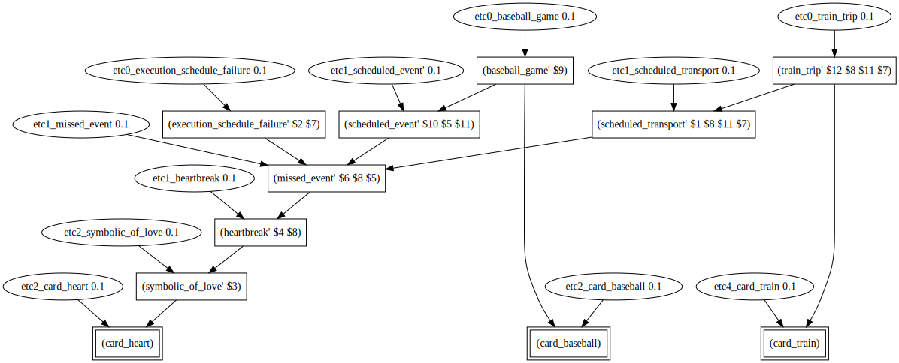

Example 7: TellTale Cards
January 14, 2019A fun game to play with your friends and family is the "TellTale" card game, created by Yves Hirschfeld and Fabien Bleuze, distributed by Blue Orange. The game consists of 60 circular cards, with a cartoon image on each side representing some narrative elements, e.g., a box of tissues, a barnyard chicken, a chemistry set. The rules of the game are somewhat loose, but the overall objective is for players to devise some creative story that weaves together the narrative elements from multiple cards into one storyline - hopefully one that is both coherent and entertaining.
TellTale is a type of story creation game, similar in many respects to "Rory's Story Cubes" and party games that involve continuing someone else's narrative. Instead of emphasizing competitive play or score-keeping, these games encourage creativity as the players work to evolve a storyline from random story elements.
Story creation games of this sort also demonstrate our amazing human abilities for abductive reasoning. Seen as an abduction problem, the cards drawn by a player are the observables, and the novel narrative that a player devises is the player's interpretation. The imagined characters, locations, objects, and events of their story create a fictional world that explains the appearance and juxtaposition of the player's cards. This sense-making brings some coherence to the observed cards, providing a playful alternative to more mundane attributions of random chance.
Etcetera Abduction is very well-suited as a tool for modeling the abductive reasoning needed to play story creation games. In this tutorial, we consider just three TellTale cards, and devise sets of axioms that enable the software to recreate eight stories from human players.
A baseball player, a heart, and a train
In the winter of 2018, Prof. Ulrike Spierling from Germany's Hochshule RheinMain took a sabbatical to sunny Los Angeles to play story creation games with her collaborator, Prof. Andrew Gordon. Over the course of many weeks, the two considered the various stories that could be considered solutions to a TellTale hand consisting of just three cards: a baseball player, a heart, and a train. Here are simplified representations of these three cards from the TellTale deck:
In addition to their own creative solutions, the two asked their friends, family, and colleagues to come up with their own narratives that included these three elements. They sorted the various solutions into groups, and ultimately selected eight instances that were best representative of the diversity of narrative tricks and devices used to bring coherence to the cards.
Next, the two sought to model how each of the eight stories could be generated via abductive reasoning, using the Etcetera Abduction software. In each attempt, the input observations provided to Etcetera Abduction would be identical. Each card was represented as a literal with a unique predicate with no arguments, as follows:
;; given (card_baseball) (card_train) (card_heart)
The challenge, then, was to devise a knowledge base of axioms for each of the eight stories such that the top solution captured its essential meaning within its representational structure.
Story 1: Beating like a train
Once there was boy playing baseball, and when it was his turn at bat, his heart was beating like a train in anticipation of the pitch.
In the first story, the baseball player is treated as a character, and the symbol of a heart is seen as representing his literal heart. The most interesting aspect of this story, however, is the metaphorical interpretation of the train, whose beating pistons and spinning wheels are seen as analogous to the beating of the player's heart.
To derive this narrative solution, we begin by considering the narrative explanation of the baseball card, by itself. Here, the card is simply explained as the consequence of the eventuality that some baseball player is at bat in a baseball game. This eventuality is not further explained, except by the prior probability of such an event occurring.
;; Why baseball? Maybe at bat
(if (and (at_bat' e1 b)
(etc1_card_baseball 0.1 e1 b))
(card_baseball))
;; why at bat?
(if (etc0_at_bat 0.1 e1 b) (at_bat' e1 b))
Defeasibly, the batter in such a situation might experience performance anxiety, which would defeasibly lead them to have a racing heart, which explains the observation of the heart card, encoded in the following three axioms:
;; Why performance anxiety? Maybe at bat
(if (and (at_bat' e1 b)
(etc1_performance_anxiety 0.1 e1 e b))
(performance_anxiety' e b))
;; Why racing heart? Maybe performance anxiety
(if (and (performance_anxiety' e1 p)
(etc1_racing_heart 0.1 e1 p e h))
(racing_heart' e h))
;; Why heart? Maybe a racing heart
(if (and (racing_heart' e1 h)
(etc1_card_heart 0.1 e1 h))
(card_heart))
Remaining to be explained is the appearance of the train card. Defeasibly, the event of a racing heart might be metaphorically like the beating of a train, and this metaphor itself explains the observation of the train card, encoded as follows:
;; Why like a train? Maybe racing heart
(if (and (racing_heart' e1 p)
(etc1_like_a_train 0.1 e e1 p))
(like_a_train' e e1))
;; Why train? Maybe metaphor for like a train
(if (and (like_a_train' e1 e2)
(etc1_card_train 0.1 e1 e2))
(card_train))
With these axioms in place, the core structure of the first story is generated as the top interpretation of the observations, as follows:
> python etcabductionpy -i docs/story1.lisp -g | ./util/dot2safari
Story 2: Beating like a train, alternative version
During the analysis of the first story, there was some disagreement on why exactly the baseball player's heart was beating like a train. In the first interpretation, the racing heart was due to performance anxiety. In a second interpretation, the racing heart was instead due to the physical exertion of the sport; the heart was beating like a train because of the athleticism of the game, as follows:
Once there was a boy playing baseball, and when it was his turn at bat, his heart was beating like a train from the physical activity of the sport.
To generate this alternative interpretation, the racing heart is instead viewed as a consequence of playing sports, which is itself an antecedent for being at bat, encoded as follows:
;; Why at bat? Maybe playing sports
(if (and (playing_sports' e1 p)
(etc1_at_bat 0.1 e e1 p))
(at_bat' e p))
;; Why playing sports? It happens
(if (etc0_playing_sports 0.1 e p) (playing_sports' e p))
;; Why racing heart? Maybe playing sports
(if (and (playing_sports' e1 p)
(etc2_racing_heart 0.1 e1 e p h))
(racing_heart' e h))
With these changes, the resulting proof structure changes slightly:
> python etcabductionpy -i docs/story2.lisp -g | ./util/dot2safari
Story 3: Commuter love
A professional baseball player commutes to the practice field by train, and eventually falls in love with the conductor who he sees each time.
A radically different interpretation considers the train more literally, and places the baseball player in the train where he meets his love interest. In this interpretation, we see the introduction of characters (the train conductor) and events (commuting a train, baseball practice) that are not depicted on the Tell Tale cards, but rather evoked in the narrative in order to provide common factors that connect them. Here the heart card is explained as a symbol of love, explained by two characters falling in love, due to their repeated meetings, because they both participate in the activity of commuting on a train (as passenger and conductor), because the passenger has to attend regular practices, because the passenger is a baseball player.
This long chain of reasoning, from the appearance of the heart card to the profession of the passenger, is encoded in the following seven axioms:
;; Why heart? Maybe symbolic of love
(if (and (symbolic_of_love' e)
(etc2_card_heart 0.1 e))
(card_heart))
;; Why symbolic of love? Maybe fall_in_love
(if (and (fall_in_love' e1 x y)
(etc1_symbolic_of_love 0.1 e e1 x y))
(symbolic_of_love' e))
;; Why love? Maybe repeated meeting
(if (and (repeated_meeting' e1 x y)
(etc1_fall_in_love 0.1 e e1 x y))
(fall_in_love' e x y))
;; Why repeated meeting? Maybe train commuting?
(if (and (train_commuting' e1 from to passenger conductor)
(etc1_repeated_meeting 0.1 e e1 from to passenger conductor))
(repeated_meeting' e passenger conductor))
;; Why train commuting? Maybe regular practice
(if (and (regular_practice' e1 player field)
(etc1_train_commuting 0.1 e e1 from field player conductor))
(train_commuting' e from field player conductor))
;; Why regular practice? Maybe baseball_player
(if (and (baseball_player' e1 player)
(etc1_regular_practice 0.1 e e1 player location))
(regular_practice' e player location))
;; Why baseball_player? It happens
(if (etc0_baseball_player 0.1 e x) (baseball_player' e x))
Combined with two additional axioms that connect train commuting to train cards, and baseball players to baseball cards, the visualized proof graph depicts the long spine of causality between the baseball player's profession and the symbol of love. To achieve this proof, however, the depth of inference must be elevated from the default of five to seven.
> python etcabductionpy -i docs/story3.lisp -d 7 -g | ./util/dot2safari
Story 4: If you love sports, you must train
The fourth story takes advantage of an English play-on-words, where "train" is polysemous as a vehicle (as depicted on the card) and as a verb synonymous with practice.
If you love sports, you must train.
This example is admittedly more of a maxim than a story. Although simple and brief, its proof structure is somewhat complex. To recreate the core conceptual structure of this example, axioms were required that hypothesized narrative events and (unidentified) characters, e.g., the "you" in this text is imagined as a person with an ambition to be better, due to admiration for the sports performance of another, namely, someone who is "at bat" in a baseball game.
As in the previous story, the structure of this interpretation requires a long chain of inferences that link one card (here, the train card) to a central story context (being at bat). This chain is as follows:
;; Why card_train? Maybe it's a pun for practice
(if (and (english_pun_for_practice' e)
(etc3_card_train 0.1 e))
(card_train))
;; Why english pun for practice? Maybe a practice event
(if (and (practice' e1 person ability)
(etc1_english_pun_for_practice 0.1 e e1 person ability))
(english_pun_for_practice' e))
;; Why practice? Maybe ambition to be better
(if (and (ambition_to_be_better' e1 person ability)
(etc1_practice 0.1 e e1 person ability))
(practice' e person ability))
;; Why ambition_to_be_better? Maybe you admiration
(if (and (admiration' e1 viewer master ability)
(etc1_ambition_to_be_better 0.1 e e1 viewer master ability))
(ambition_to_be_better' e viewer ability))
;; Why admiration? Maybe sports performance done really well
(if (and (sports_performance' e1 player ability)
(done_very_well' e2 e1)
(etc1_admiration 0.1 e e1 e2 player ability viewer))
(admiration' e viewer player ability))
;; Why done very well? It happens
(if (etc0_done_very_well 0.1 e e1) (done_very_well' e e1))
;; Why sports_performance? Maybe an at bat
(if (and (at_bat' e1 batter)
(etc1_sports_performance 0.1 e e1 batter ability))
(sports_performance' e batter ability))
;; Why at bat? It happens
(if (etc0_at_bat 0.1 e1 b) (at_bat' e1 b))
As in the previous story, this long chain of inferences requires a depth of seven, raised from the software's default of five.
> python etcabductionpy -i docs/story4.lisp -d 7 -g | ./util/dot2safari
One subtlety of the proof graph is that the antecedent of the admiration is divided into two parts, the sports performance and the doing of something very well, but these parts share arguments. That is, it is the sports performance ($10) that is done very well. Alternative this assertion could be wrapped up into a single literal denoting a sports performance done very well. However, doing so would complicate the relationship between being at bat and executing the sports performance. For simplicity sake, we'd like to have only one axiom for this relationship that would hold regardless of whether the performance was done very well or failed miserably. Was this a good representational decision to make in this particular case? Hard to say!
Story 5: Late train, missed game
I missed the last baseball game because the train was late and this broke my heart.
The fifth story sees the heart card as a symbol for the protagonist's love of baseball, and the crushing heartache felt when a baseball game is missed due to a late train.
The structure of the proof for this story is similar to previous stories in that it relies a long inferential chain. The real complexity of this solution, however, rests in a single axiom: the on that explains why an event might be missed. It is encoded as follows:
;; Why missed event? Maybe scheduling failure of transport
(if (and (scheduled_event' e1 event location)
(scheduled_transport' e2 person location transporter)
(execution_schedule_failure' e3 transporter)
(etc1_missed_event 0.1 e e1 e2 e3 event location person transporter))
(missed_event' e person event))
This one axiom captures quite a bit about modern life. It says something like the following: If there is some scheduled event to take place at some location and a person has enlisted the services of some transportation provider to take them to this location at a scheduled time and this transportation service provider screws up, then this might lead to the person missing the event.
The same axiom might explain why a concert pianist might miss his recital if his limousine driver is late, or why an astronaut might miss a rendezvous in space if her rocket's launch window is miscalculated. In this story, however, the scheduled event is the baseball game, and the scheduled transportation is a train trip.
A depth of six is required to find the solution:
> python etcabductionpy -i docs/story5.lisp -d 6 -g | ./util/dot2safari
Story 6: Pollution kills baseball player
Story number 6 presents the obituary of a baseball player:
The life story of this devotional local baseball club member is not complete without mentioning that his death was caused by a heart disease that he developed over many years while having to practice close to train tracks, where he was constantly exposed to diesel exhausts containing nitrogen dioxide.
In the winter of 2018 when this story was solicited, Germany was facing several political crises surrounding the relationship between diesel emissions and heart disease. Indeed, the juxtaposition of a heart and a train immediately evoked the controversy for this TellTale player, a German national. Having worked out the connection between hearts and trains through the common narrative element of pollution, all that was left was to figure out how the baseball player was involved.
The easiest assumption to make was that the heart belonged to the baseball player, himself. This assumption doomed his fate, however, as then he was the one who contracted heart disease from the polluting trains. But everyone is at risk when trains pollute our air with toxins. Why was it relevant that this particular person was a baseball player?
There are several possible connections. Maybe the baseball player commuted by train, as in story 3. Maybe this story was set in time when whole teams travelled by train to rival towns. Needed was some means of exposing this baseball player to the risks of train pollution over long periods of time. The solution? Workplace contamination!
Three key axioms were necessary. First, we note that heart disease can be a consequence of polluted workplaces. Second, we note that when your workplace is a practice field, then you might be a baseball player. Third, when there are polluting trains operating nearby a location, then the location becomes polluted.
;; why heart_disease? Maybe polluted workplace_of
(if (and (polluted' e1 location)
(workplace_of' e2 person location)
(etc1_heart_disease 0.1 e e1 e2 person location))
(heart_disease' e person))
;; why baseball_player? Maybe someone works at a practice field
(if (and (practice_field' e1 location)
(workplace_of' e2 person location)
(etc1_baseball_player 0.1 e e1 e2 person location))
(baseball_player' e person))
;; Why polluted? Maybe near polluting trains
(if (and (polluting_trains' e1 trains)
(happens_near' e2 e1 location)
(etc1_polluted 0.1 e e1 e2 trains location))
(polluted' e location))
The combination of these three key inferences yields a nice proof structure, somewhat more dense than the long stringy ones seen in earlier stories.
> python etcabductionpy -i docs/story6.lisp -g | ./util/dot2safari
In this story, we see some of the human mind's remarkable sense-making ability at work. The ability to find pathways of connections among disparate narrative elements is impressive, and might reasonably be attributed to some sort of "spreading activation" in the brain's semantic networks. To my eyes, however, the more remarkable feat is the unification of variables across very disparate parts of this proof graph. Specifically, I'm impressed with $6. This imagined location is simultaneously a practice field, the workplace of a baseball player, a polluted location, and in the vicinity of polluting trains. Indeed, if this location were not all four of these things at the same time, this story would fall apart completely. Simple spreading activation models are not enough to explain the brain's remarkable ability for relational search, formalized here as the unification of literals in first-order logic. How does the brain do that!?
Story 7: Late train loves baseball
Once there was a train who loved watching baseball. It was always late when passing fields on game days.
Story #7 adds another familiar narrative device, treating the train card as a depiction of an anthropomorphized character. Indeed, anthropomorphized trains are quite frequent in children's literature, and it is not a far stretch to imagine that one of these trains might be interested in the sport of baseball. Actually, more than interested: the train loves baseball with all of its heart.
In truth, the coherence question could have ended there. An anthropomorphic train loves baseball. End of story. However, that would have been a rather shallow story, lacking the other elements of children's literature that are evoked by a human-like train. Is there no conflict to overcome? No moral or life-lesson?
To enrich this story somewhat, the author embeds a character flaw in the protagonist - a narrative device that endears us to past anthropomorphic characters from Pinnochio (mischievous, naive) to Dory (pathologically forgetful). Here, our anthropomorphized train is chronically late. Conveniently, this is simultaneously the worst quality a train could have, and one that is readily explained by its love of baseball.
The crux of this story rests on a truth of human nature: people are distracted by watching something they love. Worse, they'll be frequently distracted if the things they love happen frequently. This truth is wrapped up into a single axiom:
;; Why frequently distracted? Maybe frequent interesting events
(if (and (frequent_events_at_location' e1 e2 location days)
(frequently_watching' e3 person e2 days)
(etc1_distracted 0.1 e e1 e2 e3 person location days))
(frequently_distracted' e person location days))
This could have instead been formulated as two axioms: one that ties watching to distraction, and a second that deals with temporal frequency. In compressing these two ideas into one axiom, we end up with a representational solution that doesn't generalize nicely to other stores, e.g. stories of one-time distractions, or stories of frequently recurring events.
A more egregious example of overloaded axioms was used to represent the "frequently late train" as seen below:
;; Why frequently late train? Maybe its a person, frequently distracted along the way
(if (and (anthropomorphized' e1 train)
(frequently_distracted' e2 train path days)
(path_destination' e3 path station)
(etc1_frequently_late_train 0.1 e e1 e2 e3 train path station days))
(frequently_late_train' e train station days))
In this one overloaded axiom, we've collapsed the concepts of anthropomorphism, frequent distractions, train stations, and late trains! From a knowledge representation perspective, this axiom is pretty embarrassing. It's not wrong, per se; it just seems too specific to this one proof structure. Where would we ever use this axiom again? However, it gets the job done, and we can generate a complete proof graph:
> python etcabductionpy -i docs/story7.lisp -g | ./util/dot2safari
Story 8: Piñata Party on Train
A boy had his birthday party on a train and hit a heart-shaped piñata with a bat.
This eighth story offers a novel twist on the baseball card, viewing instead as a boy swinging a bat at a piñata. Given the cartoon nature of TellTale cards, there is some ambiguity in the image that appears on the original card. It seems clear that the original intention of the drawing was to evoke a batter in a baseball game, but a creative visual interpretation of this image might suggest other bat-swinging contexts, e.g., the bat is a weapon, or a tool of (piñata) destruction.
To bring the three cards together, this interpretation relies on one long chain of inferences, and two shorter ones to make the connections. The long chain begins with the assumption that we're at a birthday party, which explains why someone might be playing a piñata game, which explains why there is a piñata, whose existence explains the presence of a crafted object, which explains why it might be in the shape of a heart, which explains the appearence of the heart card.
;; Why card heart? Maybe something has the shape of a heart
(if (and (shape_of_heart' e object)
(etc8_card_heart 0.1 e object))
(card_heart))
;; Why shape of object? Maybe crafted object
(if (and (crafted_object' e1 object)
(etc1_shape_of_heart' 0.1 e e1 object))
(shape_of_heart' e object))
;; Why crafted object? Maybe a pinata
(if (and (pinata' e1 object)
(etc1_crafted_object 0.1 e e1 object))
(crafted_object' e object))
;; Why pinata? Maybe a pinata game
(if (and (pinata_game' e1 player pinata bat)
(etc1_pinata 0.1 e e1 player pinata bat))
(pinata' e pinata))
;; Why Pinata game? Maybe birthday party
(if (and (birthday_party' e1 attendee location)
(etc1_pinata_game 0.1 e e1 attendee location pinata bat))
(pinata_game' e attendee pinata bat))
;; Why birthday party? It happens
(if (etc0_birthday_party 0.1 e attendee location)
(birthday_party' e attendee location))
The first of the smaller inferential chains starts with the piñata game, which explains why someone might be swinging a bat, which explains the appearance of the baseball card.
;; Why card baseball? Maybe swinging a bat
(if (and (swinging_bat' e1 person bat)
(etc8_card_baseball 0.1 e1 person bat))
(card_baseball))
;; Why swinging a bat? Maybe pinata game
(if (and (pinata_game' e1 player pinata bat)
(etc1_swinging_bat 0.1 e e1 player bat pinata))
(swinging_bat' e player bat))
The second of the smaller inferential chains connects the birthday party to the train card. Here we simply postulate that the setting of this birthday party might be a train, i.e. that the occurence of the birthday party explains that it must be set somewhere, and this necessity explains the appearence of the train card.
;; Why card_train? Maybe setting of event is a train
(if (and (train' e1 train)
(setting_of' e2 e1 train)
(etc8_card_train 0.1 e1 e2 train))
(card_train))
;; Why train? it happens
(if (etc0_train 0.1 e train) (train' e train))
;; Why settting_of? Maybe a birthday party
(if (and (birthday_party' e1 attendee location)
(etc1_setting_of 0.1 e e1 attendee location))
(setting_of' e e1 location))
With these three inferential chains in place, the complete proof structure can be generated:
> python etcabductionpy -i docs/story8.lisp -g | ./util/dot2safari
Summary: The Commonsense Reasoning Perplex
Having completed the recreation of the eighth story, there are a few lessons to take away from this exercise.
First, we see that abductive reasoning, in the most general sense, is a good model for the sort of reasoning that was employed by the people who originally imagined these eight stories. The fabrication of fictional entities, events, and worlds is among our most cherished high-level cognitive abilities. Casting this ability as an abduction problem seems to make sense: we're designing hypotheticals that compactly explain the observations, and good interpretations are ones that leave no dangling questions.
Second, implementing this cognitive ability in software using logical abduction is going to be extremely difficult, because of the problem of commonsense knowledge representation. Suppose we wanted to scale our approach up so that we could automatically generate creative interpretations for any combination of cards from TellTale's deck of 120 images. The perplex we are faced with is as follows:
- An enormous breadth of commonsense knowledge is employed when people devise narrative interpretations.
- Logical representations of this knowledge need to be carefully and exquisitely crafted in order to adequately support automated reasoning.
- The variety of ways that this knowledge could be formalized is quite numerous, but without consistency across the knowledge base, nothing works.
- We have no idea how to devise sufficiently large commonsense knowledge bases with the degree of consistency required for logic-based automated reasoning.
Although the first of these four points is indisputable, the remaining three all seem to be problems that are specific to logical approaches to commonsense reasoning. Wouldn't all of these problems go away if we adopted some other representational medium for commonsense knowledge, and paired it with some other type of reasoning of equal power? Yes! Absolutely! Go for it. Let's do it. What alternative do you have in mind, specifically?